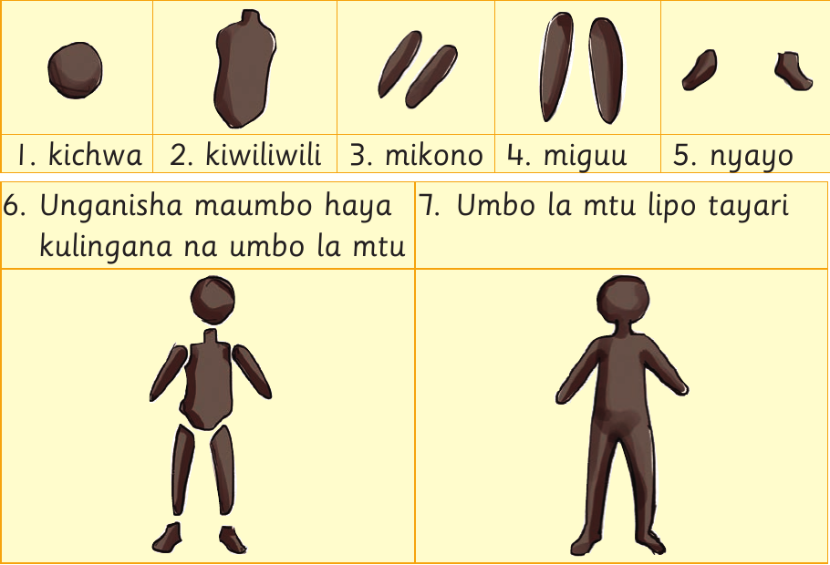

Anza kufinyanga umbo la mtu kwa kuandaa udongo. Tumia mikono kutengeneza maumbo ya kichwa, kiwiliwili, mikono, miguu na nyayo.
Hatua za kufinyanga umbo la mtu

Hatua ya kwanza: Finyanga udongo kuwa umbo la duara kwa ajili ya kichwa. Hatua ya pili: Finyanga umbo refu kwa ajili ya kiwiliwili. Hatua ya tatu: Finyanga vipande viwili vyembamba kwa ajili ya mikono. Hatua ya nne: Finyanga vipande viwili virefu kwa ajili ya miguu. Hatua ya tano: Finyanga vipande viwili vidogo kwa ajili ya nyayo. Hatua ya sita: Unganisha kichwa, kiwiliwili, mikono, miguu na nyayo kulingana na umbo la mtu. Hatua ya saba: Umbo la mtu lipo tayari.